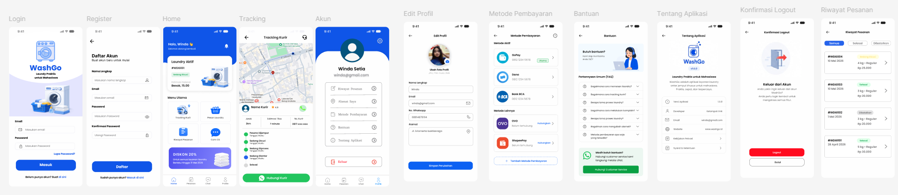
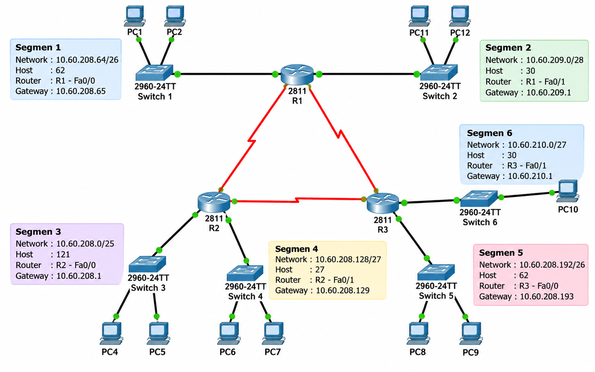
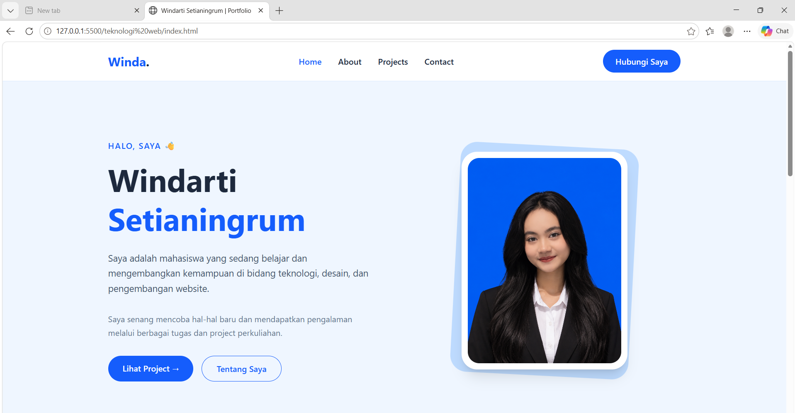

PROJECT SAYA
Beberapa tugas dan project yang saya kerjakan selama proses pembelajaran di perkuliahan.

Merancang desain antarmuka aplikasi layanan laundry yang ditujukan untuk mahasiswa.
Mata Kuliah: Interaksi Manusia dan Komputer
Tools: Figma
Jenis: Kerja Kelompok - UI/UX Design

Merancang topologi jaringan komputer menggunakan Cisco Packet Tracer sebagai tugas UAS.
Mata Kuliah: Keamanan Komputer
Tools: Cisco Packet Tracer
Jenis: Tugas UAS - Kerja Kelompok

Membuat website profil pribadi yang berisi informasi diri dan beberapa project perkuliahan.
Mata Kuliah: Teknologi Web
Tools: HTML, CSS, Tailwind CSS
Jenis: Tugas Perkuliahan
Mengembangkan aplikasi pemesanan makanan dan minuman berbasis web menggunakan React, dengan fitur detail menu, keranjang, checkout, rating, dan ulasan.
Mata Kuliah: Teknologi Web
Tools: React, JavaScript, Tailwind CSS, GitHub Pages
Jenis: Tugas Perkuliahan - E-Commerce
TERIMA KASIH
Setiap project menjadi bagian dari proses saya untuk belajar dan mendapatkan pengalaman baru.
Hubungi Saya